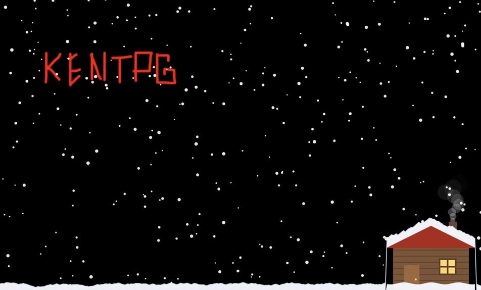

Чтобы не пролистнули за первые две секунды.
VHS, iPhone 6, iPhone 16. Кроме камеры за миллион, её пока нет.
Склейки в бит, перемотки, вспышки, зерно.
Я актёр. Встану в кадр сам.
Пять лет в кино, театре и рекламе. Если бренду нужен человек в кадре, искать не придётся.
Лонгрид будущего проекта: логотип, шрифты, пригласительные, афиши, наклейки и мерч.
Сайт со всеми кинофестивалями России и СНГ для независимых режиссёров.

Написал приложение специально под Mac: на рабочем столе идёт снег, а дворник из домика его чистит.